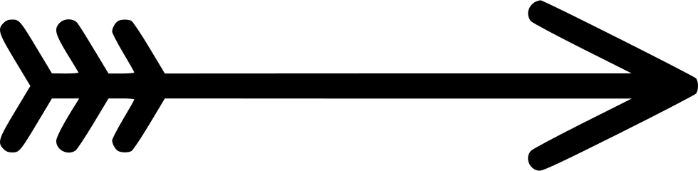

Loaction:
Description:
Temperature:
Feels Like:

Wind Speed:
Wind Direction:
Loaction:
Description:
Temperature:
Feels Like:
Wind Speed:
Wind Direction:
Click the button below to pin tweets containing @NU_CISdept, @NorthumbriaSU, @NUlibray, or @NorthumbriaUni to the map!
The markers are generated using the location of the twitter users’ profile and uses Googles Geocode API to get the coordinates of that location.
Google has tight restrictions on how many geocodes they provide within a time, so this button will timeout for a short while after clicking.
Here you can get direction to the locations on campus and find places of interest nearby.
Click on the map to add a location or type your current address and click “get directions” for a list of directions and a route shown on the map.
Find areas of interest by selecting the types of places you want and clicking “Find places”.
From: ...
To: ...
Distance: ...
Duration: ...
Status:
Select places you want to see:
A Twitter feed showing the latest tweets posted by or containing the handles @NU_CISdept, @NorthumbriaSU, @NULIbrary and @NorthumbriaUni. Tweets can be filtered by handle.
Here you can authorise this website, authenticate with twitter and post a tweet.
text enterered will be appened with "#KF6013_Assignment_Task"
Tweets you have sent from this page.